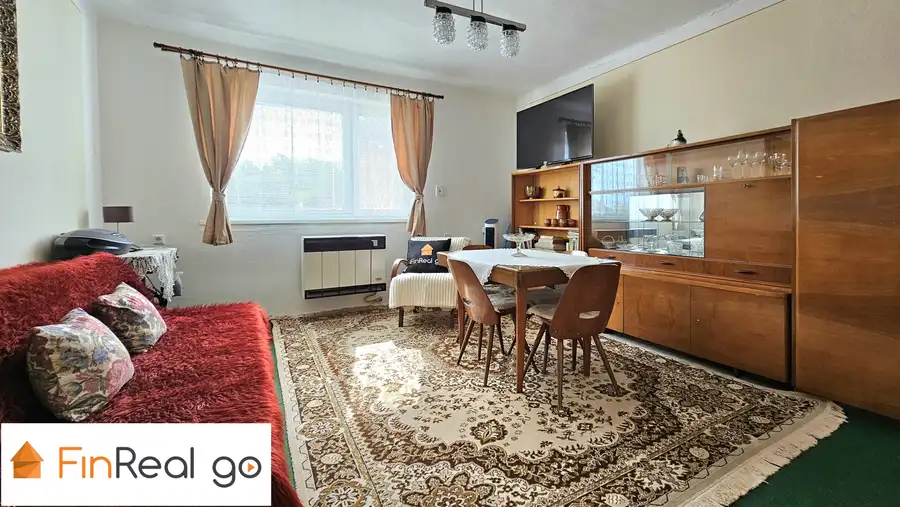
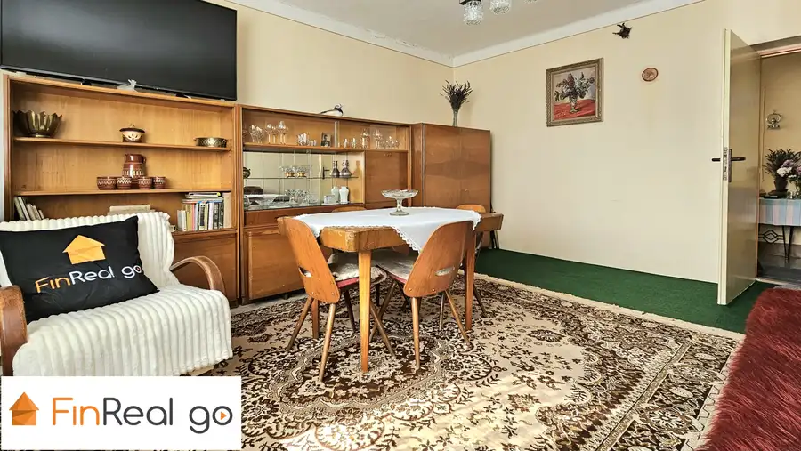
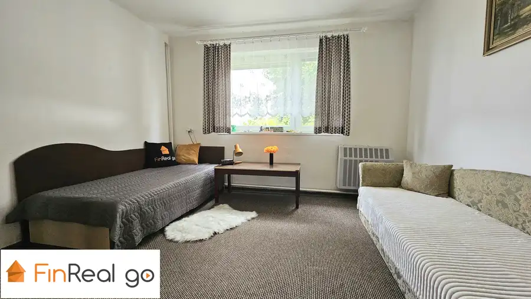
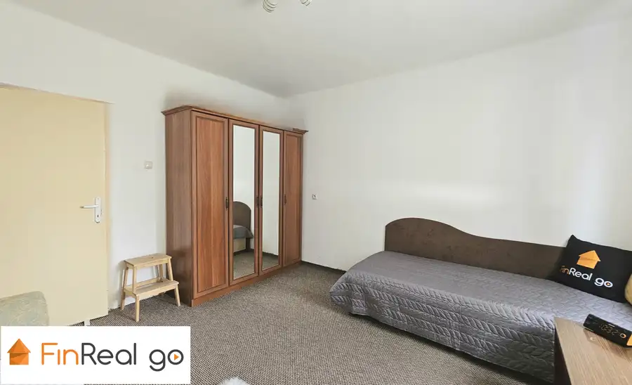
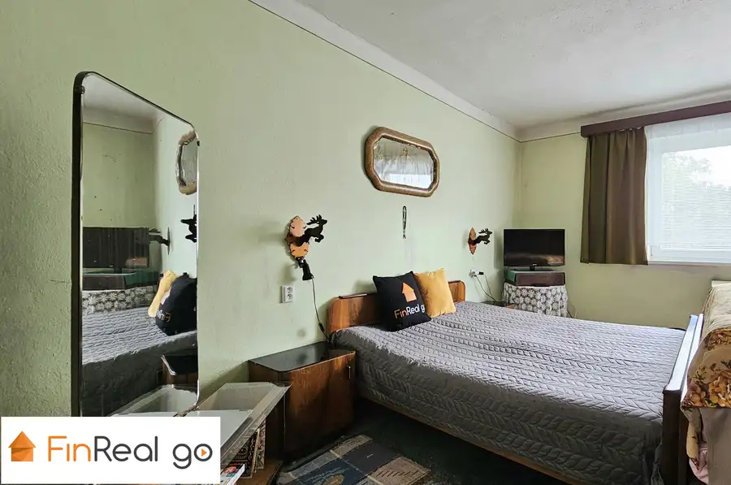
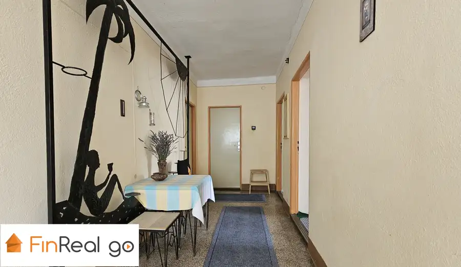
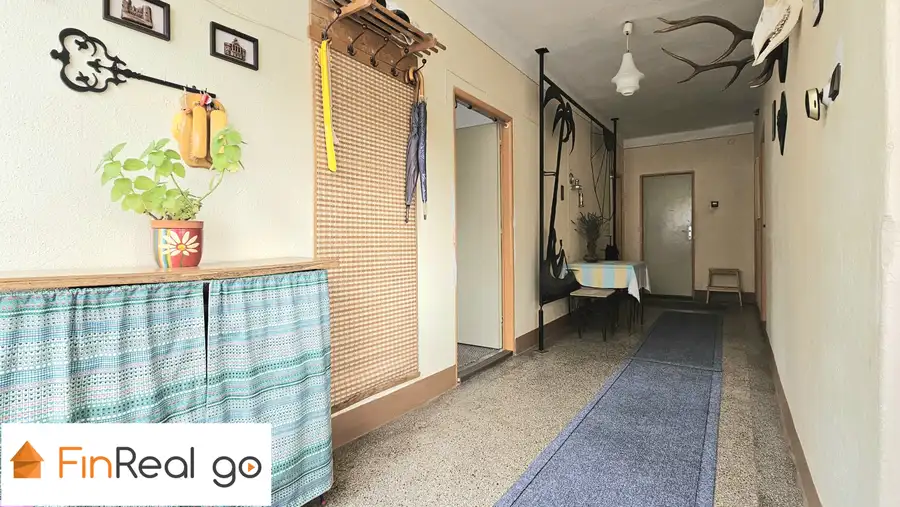
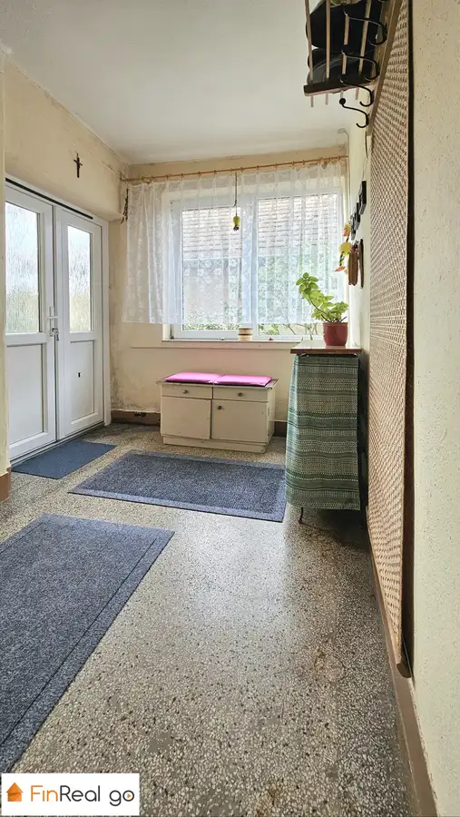
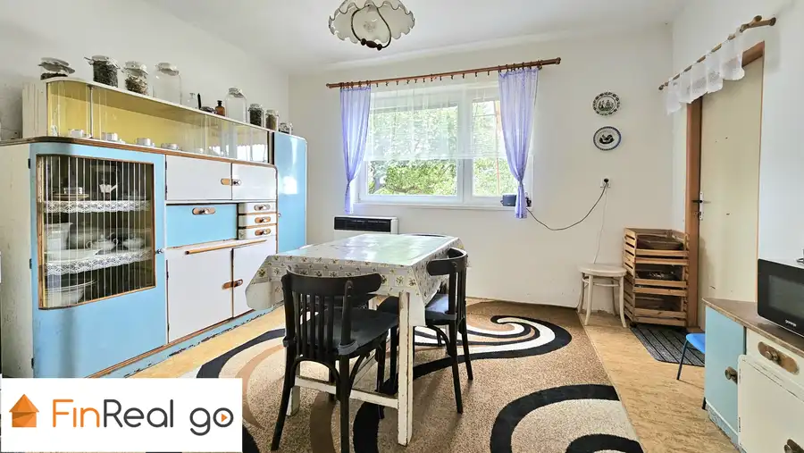

PREDAJ, 3- izbový rodinný dom, Kalná nad Hronom, časť Kalná
Kalná nad Hronom










- Plocha120 m²
- StavČiastočná rekonštrukcia
- VlastníctvoOsobné
O nehnuteľnosti
FinReal go v exkluzívnom zastúpení ponúka na predaj 3-izbový čiastočne podpivničený rodinný dom, postavený na pozemku o celkovej výmere 862 m2. Dom sa nachádza v tichej lokalite vyhľadávanej obce Kalná nad Hronom, vzdialenej od Levíc len 9 minút autom. Dom sa predáva s krásnou slnečnou záhradou na hranici ktorej sú pripravené inžinierske siete a prístupová cesta, ktorá je pripravená na možnú výstavbu. RODINNÝ DOM:- zastavaná plocha RD je 126 m2- tehlová jednopodlažná stavba s valbovou strechou, s čiastočným podpivničením- zachovalý pôvodný stav s rekonštruovanou kúpeľňou, vymenenými rozvodmi vody a odpadu- kúrenie je zabezpečené plynovými gamatkami v každej izbe- 2 vstupné vchody- plastové okná a hlavné vchodové dvereDISPOZÍCIA DOMU:- vstupná chodba- 3 nepriechodné priestranné izby- kuchyňa s komorou- kúpeľňa s WC- zadný východ do dvora s výstupom na povalu- samostatný vstup do pivničných priestorov- možnosť využitia RD pre súkromné ako aj pre podnikateľské účely, napr. ubytovacie priestory pre JE v blízkych Mochovciach.INŽINIERSKE SIETE:- elektrická energia- plyn- obecný vodovod + studňa - odpad je napojený na obecnú kanalizáciuPOZEMOK: - oplotený o výmere 862 m2- okrasná predzáhradka- altánok- studňa- ovocné stromy : marhuľa, hruška, slivka- parkovacie státie vo dvore aj pre viaceré autáLOKALITA:- tichá- vedľajšia ulica- časť KalnáKalná nad Hronom ponúka svojim občanom nadštandardnú občiansku vybavenosť. Nachádza sa tu materská škôlka, základná škola, zdravotné stredisko, lekáreň, pošta, obecná polícia, obchody, 2 čerpacie stanice, služby, wellnes, zariadenie pre seniorov, autobusové zastávky, železničná stanica. Voľný čas je možné tráviť v modernom fitnesscentre, alebo prechádzkami a rybolovom v okolí Hrona. CENA:- celková cena je 130.000,- EUR vrátane provízie pre RK a kompletného právneho servisuSme partnerom FINGO, bezplatne zabezpečíme aj najvýhodnejšie hypotekárne financovanie.V prípade záujmu kontaktujte makléra:Alena Vozárovátel. 0905 519 295e-mail: alena.vozarova@frgo.sk
Parametre
- Druh
- Rodinný dom
- Dátum zverejnenia
- 05. 09. 2025
- Plocha pozemku
- 862 m²
- Plocha predzáhradky
- 20 m²
- Počet izieb / miestností
- 3
- Počet pivníc
- 1
- Stav nehnuteľnosti
- Čiastočná rekonštrukcia
- Telekomunikácie
- Internet, Káblová TV
- Terén pozemku
- Rovinatý
- Typ
- Predaj
- Vlastníctvo
- Osobné
- Vybavenie
- Pivnica, Špajza
- Vykurovanie
- Lokálne
- Zastavaná plocha
- 126 m²
- Úžitková plocha
- 120 m²